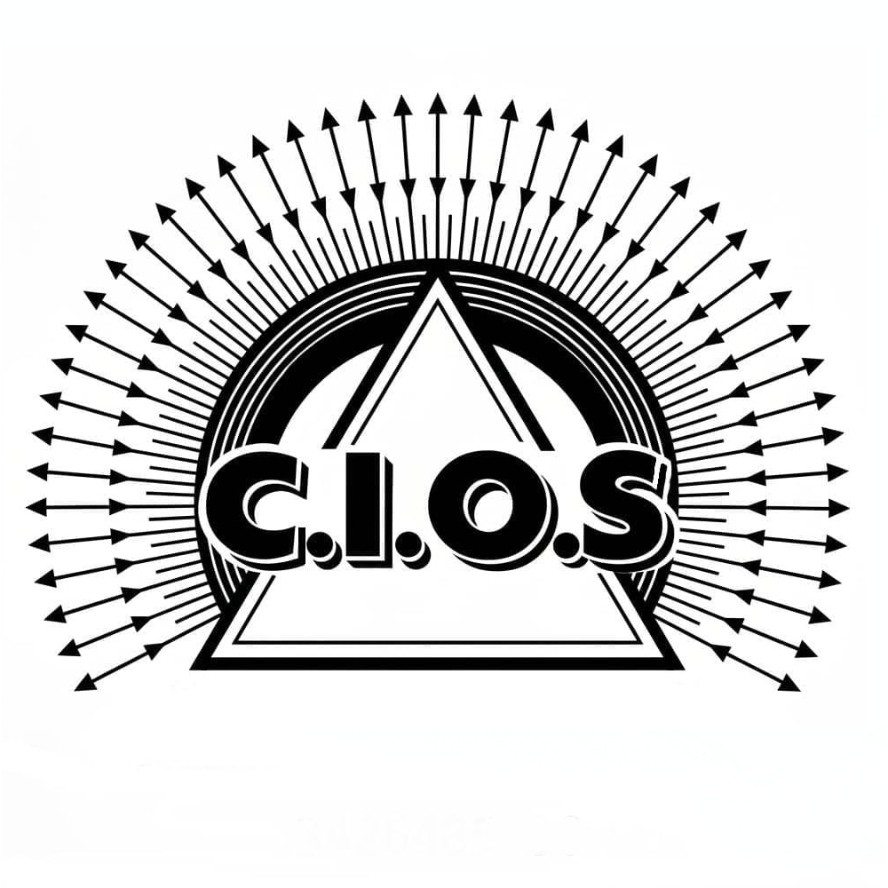

Profesionales matriculados
Personal con matrícula habilitante.

C.I.O.SConectamos a la comunidad con instaladores matriculados, comprometidos con la seguridad, la calidad y el trabajo responsable.
Personal con matrícula habilitante.
Compromiso con la seguridad y la calidad.
Consultá los datos de nuestros asociados.
Una organización que acompaña a sus asociados.
Encontrá profesionales para distintos tipos de instalaciones y trabajos. Consultá la matrícula y los datos de cada asociado antes de contratar.
Profesionales matriculados para trabajos relacionados con instalaciones de gas.
Ver asociados →Encontrá asociados según su especialidad y categoría de matrícula.
Ver asociados →Consultá qué profesionales pueden ayudarte con tu trabajo.
Ver asociados →Revisá el listado de asociados y contactá a la cooperativa para orientarte.
Hacer una consulta →La Cooperativa de Instaladores Organizados de Santa Fe reúne a profesionales que buscan brindar un servicio responsable y fortalecer el trabajo colaborativo.
Accedé a los recursos de la cooperativa o comunicate con nosotros para resolver tus dudas.